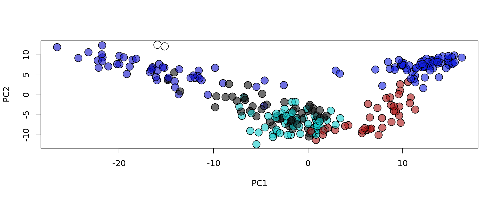
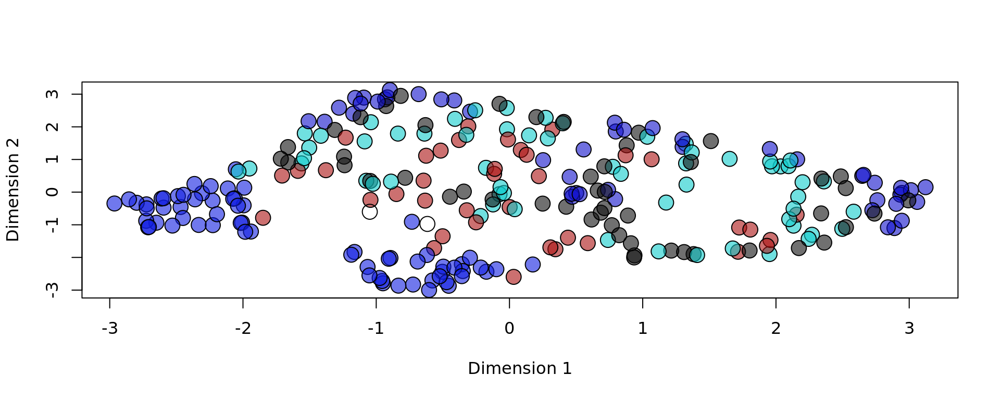

Last updated: 2024-07-18
Checks: 7 0
Knit directory: KODAMA-Analysis/
This reproducible R Markdown analysis was created with workflowr (version 1.7.1). The Checks tab describes the reproducibility checks that were applied when the results were created. The Past versions tab lists the development history.
Great! Since the R Markdown file has been committed to the Git repository, you know the exact version of the code that produced these results.
Great job! The global environment was empty. Objects defined in the global environment can affect the analysis in your R Markdown file in unknown ways. For reproduciblity it’s best to always run the code in an empty environment.
The command set.seed(20240618) was run prior to running
the code in the R Markdown file. Setting a seed ensures that any results
that rely on randomness, e.g. subsampling or permutations, are
reproducible.
Great job! Recording the operating system, R version, and package versions is critical for reproducibility.
Nice! There were no cached chunks for this analysis, so you can be confident that you successfully produced the results during this run.
Great job! Using relative paths to the files within your workflowr project makes it easier to run your code on other machines.
Great! You are using Git for version control. Tracking code development and connecting the code version to the results is critical for reproducibility.
The results in this page were generated with repository version ba01dd7. See the Past versions tab to see a history of the changes made to the R Markdown and HTML files.
Note that you need to be careful to ensure that all relevant files for
the analysis have been committed to Git prior to generating the results
(you can use wflow_publish or
wflow_git_commit). workflowr only checks the R Markdown
file, but you know if there are other scripts or data files that it
depends on. Below is the status of the Git repository when the results
were generated:
Ignored files:
Ignored: .Rhistory
Ignored: .Rproj.user/
Untracked files:
Untracked: .gitignore
Unstaged changes:
Deleted: analysis/figure/DLPFC-12.Rmd/unnamed-chunk-10-1.png
Note that any generated files, e.g. HTML, png, CSS, etc., are not included in this status report because it is ok for generated content to have uncommitted changes.
These are the previous versions of the repository in which changes were
made to the R Markdown (analysis/SpatialExperiment.Rmd) and
HTML (docs/SpatialExperiment.html) files. If you’ve
configured a remote Git repository (see ?wflow_git_remote),
click on the hyperlinks in the table below to view the files as they
were in that past version.
| File | Version | Author | Date | Message |
|---|---|---|---|---|
| Rmd | ba01dd7 | Stefano Cacciatore | 2024-07-18 | Start my new project |
| Rmd | 0e75f7b | GitHub | 2024-07-16 | Create SpatialExperiment.Rmd |
Spatial Transcriptomics has revolutionized the study of tissue architecture by integrating spatial information with transcriptomic data. This tutorial demonstrates how to perform spatial data analysis and visualize the results. We will use a dataset from the mouse olfactory bulb (OB), acquired via the Spatial Transcriptomics platform (Stahl et al. 2016) link to the article. This dataset includes annotations for five cellular layers as provided by the original authors.
Spatial Transcriptomics enables researchers to explore the spatial organization of gene expression within tissues, offering insights into cellular interactions and tissue microenvironments. By combining spatial coordinates with gene expression profiles, analyses such as Principal Component Analysis (PCA) and visualization techniques like KODAMA provide powerful tools to uncover spatial patterns and relationships in biological data. # Tutorial Steps
library(SpatialExperiment)
library(STexampleData)
library(scran)
library(scater)
library(KODAMA)
library(KODAMAextra)
# Loading spatial data from the mouse olfactory bulb
spe = ST_mouseOB()# Extracting cell metadata
metaData = SingleCellExperiment::colData(spe)
# Calculating library factors
spe <- computeLibraryFactors(spe)
# Summarizing size factors
summary(sizeFactors(spe)) Min. 1st Qu. Median Mean 3rd Qu. Max.
0.0001259 0.6490732 0.9197538 1.0000000 1.3239172 2.3464869 spe <- logNormCounts(spe)# Selecting highly variable genes
top_hvgs <- getTopHVGs(spe, prop = 0.1)
# Performing PCA
spe <- runPCA(spe, 50, subset_row = top_hvgs, scale = TRUE)
# Defining colors for PCA plot based on "layer" metadata
colors = c("#11111199", "#111ee199", "#aa111199", "#1111cc99", "#11cccc99")
plot(reducedDim(spe, type = "PCA"), bg = colors[as.factor(metaData[,"layer"])], pch = 21, cex = 2)
# Running KODAMA on the reduced PCA matrix
spe = RunKODAMAmatrix(spe, reduction = "PCA")socket cluster with 1 nodes on host 'localhost'
================================================================================[1] "Finished parallel computation"
[1] "Calculation of dissimilarity matrix..."
================================================================================# Visualizing KODAMA using UMAP method
spe = RunKODAMAvisualization(spe, method = "UMAP")# Retrieving spatial coordinates
xy = spatialCoords(spe)
# Plotting reduced data with KODAMA, based on "layer" metadata
plot(reducedDim(spe, type = "KODAMA"), bg = colors[as.factor(metaData[,"layer"])], pch = 21, cex = 2)
# Plotting spatial coordinates, based on "layer" metadata
plot(xy, bg = colors[as.factor(metaData[,"layer"])], pch = 21, cex = 2)This tutorial covered essential steps for performing spatial data analysis in R, using techniques such as Principal Component Analysis (PCA) and the KODAMA tool for visualization. You can now further explore and adapt these methods to your own data and research questions.
sessionInfo()R version 4.3.3 (2024-02-29 ucrt)
Platform: x86_64-w64-mingw32/x64 (64-bit)
Running under: Windows 10 x64 (build 19045)
Matrix products: default
locale:
[1] LC_COLLATE=English_United States.utf8
[2] LC_CTYPE=English_United States.utf8
[3] LC_MONETARY=English_United States.utf8
[4] LC_NUMERIC=C
[5] LC_TIME=English_United States.utf8
time zone: Africa/Johannesburg
tzcode source: internal
attached base packages:
[1] parallel stats4 stats graphics grDevices utils datasets
[8] methods base
other attached packages:
[1] KODAMAextra_1.0 e1071_1.7-14
[3] doParallel_1.0.17 iterators_1.0.14
[5] foreach_1.5.2 KODAMA_3.1
[7] umap_0.2.10.0 Rtsne_0.17
[9] minerva_1.5.10 scater_1.30.1
[11] ggplot2_3.5.1 scran_1.30.2
[13] scuttle_1.12.0 STexampleData_1.10.1
[15] ExperimentHub_2.10.0 AnnotationHub_3.10.1
[17] BiocFileCache_2.10.2 dbplyr_2.5.0
[19] SpatialExperiment_1.12.0 SingleCellExperiment_1.24.0
[21] SummarizedExperiment_1.32.0 Biobase_2.62.0
[23] GenomicRanges_1.54.1 GenomeInfoDb_1.38.8
[25] IRanges_2.36.0 S4Vectors_0.40.2
[27] BiocGenerics_0.48.1 MatrixGenerics_1.14.0
[29] matrixStats_1.3.0
loaded via a namespace (and not attached):
[1] rstudioapi_0.16.0 jsonlite_1.8.8
[3] magrittr_2.0.3 ggbeeswarm_0.7.2
[5] magick_2.8.4 rmarkdown_2.27
[7] fs_1.6.4 zlibbioc_1.48.2
[9] vctrs_0.6.5 memoise_2.0.1
[11] DelayedMatrixStats_1.24.0 RCurl_1.98-1.14
[13] askpass_1.2.0 htmltools_0.5.8.1
[15] S4Arrays_1.2.1 curl_5.2.1
[17] BiocNeighbors_1.20.2 SparseArray_1.2.4
[19] sass_0.4.9 bslib_0.7.0
[21] cachem_1.1.0 whisker_0.4.1
[23] igraph_2.0.3 mime_0.12
[25] lifecycle_1.0.4 pkgconfig_2.0.3
[27] rsvd_1.0.5 Matrix_1.6-5
[29] R6_2.5.1 fastmap_1.2.0
[31] GenomeInfoDbData_1.2.11 shiny_1.8.1.1
[33] digest_0.6.36 colorspace_2.1-0
[35] AnnotationDbi_1.64.1 rprojroot_2.0.4
[37] RSpectra_0.16-1 dqrng_0.4.1
[39] irlba_2.3.5.1 RSQLite_2.3.7
[41] beachmat_2.18.1 filelock_1.0.3
[43] fansi_1.0.6 httr_1.4.7
[45] abind_1.4-5 compiler_4.3.3
[47] proxy_0.4-27 bit64_4.0.5
[49] withr_3.0.0 BiocParallel_1.36.0
[51] viridis_0.6.5 DBI_1.2.3
[53] highr_0.11 openssl_2.2.0
[55] rappdirs_0.3.3 DelayedArray_0.28.0
[57] rjson_0.2.21 bluster_1.12.0
[59] tools_4.3.3 vipor_0.4.7
[61] beeswarm_0.4.0 interactiveDisplayBase_1.40.0
[63] httpuv_1.6.15 glue_1.7.0
[65] promises_1.3.0 grid_4.3.3
[67] cluster_2.1.6 snow_0.4-4
[69] generics_0.1.3 gtable_0.3.5
[71] class_7.3-22 BiocSingular_1.18.0
[73] ScaledMatrix_1.10.0 metapod_1.10.1
[75] utf8_1.2.4 XVector_0.42.0
[77] ggrepel_0.9.5 BiocVersion_3.18.1
[79] pillar_1.9.0 stringr_1.5.1
[81] limma_3.58.1 later_1.3.2
[83] dplyr_1.1.4 lattice_0.22-6
[85] bit_4.0.5 tidyselect_1.2.1
[87] locfit_1.5-9.10 Biostrings_2.70.3
[89] knitr_1.48 git2r_0.33.0
[91] gridExtra_2.3 edgeR_4.0.16
[93] xfun_0.45 statmod_1.5.0
[95] stringi_1.8.4 workflowr_1.7.1
[97] yaml_2.3.8 evaluate_0.24.0
[99] codetools_0.2-20 tibble_3.2.1
[101] BiocManager_1.30.23 cli_3.6.2
[103] reticulate_1.38.0 xtable_1.8-4
[105] munsell_0.5.1 jquerylib_0.1.4
[107] Rcpp_1.0.12 doSNOW_1.0.20
[109] png_0.1-8 blob_1.2.4
[111] sparseMatrixStats_1.14.0 bitops_1.0-7
[113] viridisLite_0.4.2 scales_1.3.0
[115] purrr_1.0.2 crayon_1.5.3
[117] rlang_1.1.4 KEGGREST_1.42.0